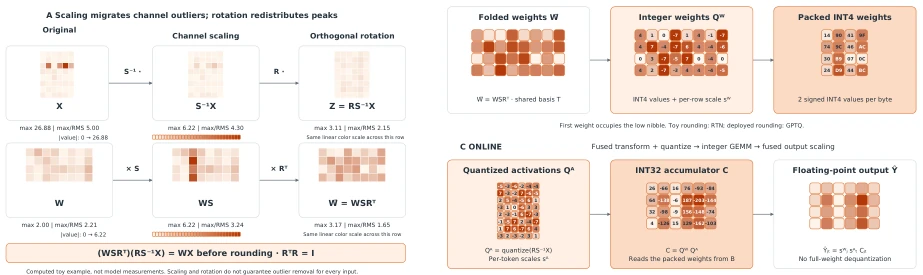
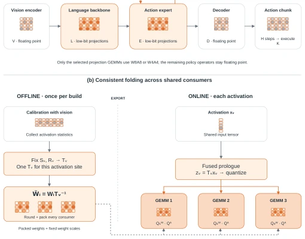
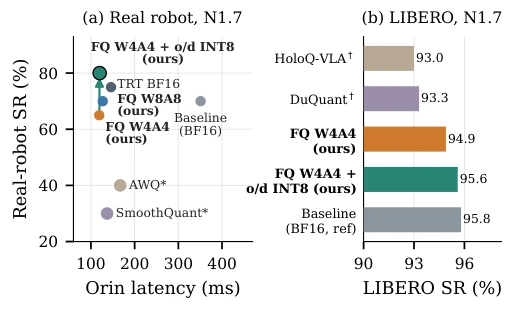
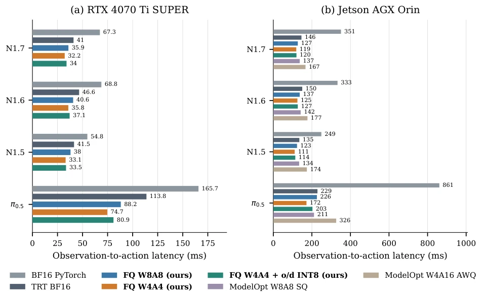
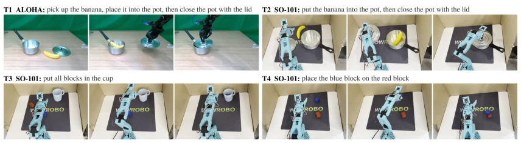

This paper puts a 'low-bit tight suit' on VLA models, attempting to run smoothly on Jetson Orin. The core of FoldQuantVLA is 'consistent folding', absorbing activation value transformations into weights, saving retraining. W4A4 is indeed fast, achieving a 1.3x speedup on Orin, but at the cost of accuracy fluctuation. The most clever part is 'Selective INT8', keeping the language backbone's o_proj and down_proj at 8-bit, pulling real-robot success rate from 80% to 92.5%, costing only 1ms. However, this trick fails directly on some architectures (such as SmolVLA), indicating 'consistent folding' is not a panacea. Engineering-wise it is excellent, theoretically it still depends on model constitution. The H100 backend even degrades to INT8 arithmetic, the so-called 'native low-bit' is discounted on some hardware, belonging to a typical 'eat what is served' solution. It is a gospel for teams pursuing ultimate deployment efficiency, but caution is needed for scenarios requiring high model generalization.
When deploying VLA models to edge devices (such as robots), latency and memory are bottlenecks. Existing PTQ methods such as SmoothQuant [3] and AWQ [12] can handle activation outliers, but lack consistency calibration across shared activation bits. HoloQ-VLA [22] attempts W4A4 but does not resolve coordinate transformation conflicts between shared consumers. This paper aims to solve the problem of closed-loop behavior degradation after quantization, ensuring observed action latency reduction while maintaining policy stability. Quantization errors will change subsequent observations, action fidelity must be ensured. Both backbone and expert networks are on the latency critical path, any accuracy loss may trigger chain reactions. Additionally, existing work mostly focuses on offline accuracy, ignoring real-world closed-loop performance.
方法Method
整体流程分离线与在线。离线阶段：收集校准 token，固定共享激活变换 T（通道缩放 + 块 Hadamard 旋转），将 T 的逆折叠进所有消费权重，再量化打包。在线阶段：对激活应用 T 变换并动态 per-token 量化，执行整数 GEMM。创新点在于“一致折叠”契约，确保共享激活位只有一种坐标变换。此外，针对敏感层（o_proj/down_proj）保留 W8A8，其余 W4A4，平衡精度与速度。FWHT 用于旋转，GPTQ 用于权重舍入，TensorRT 插件执行。算法 1 详细定义了构建与运行时步骤，支持 per-token 缩放表。该方案避免了 timestep 索引的缩放表，通过归一化增益吸收减少计算开销，确保在 Ada 和 Orin 上实现原生低比特执行。
The overall process separates offline and online. Offline phase: collect calibration tokens, fix shared activation transform T (channel scaling + block Hadamard rotation), fold T's inverse into all consumer weights, then quantize and pack. Online phase: apply T transform to activations and dynamic per-token quantize, execute integer GEMM. The innovation lies in the 'consistent folding' contract, ensuring shared activation bits have only one coordinate transform. Additionally, for sensitive layers (o_proj/down_proj) keep W8A8, rest W4A4, balancing accuracy and speed. FWHT used for rotation, GPTQ for weight rounding, TensorRT plugin execution. Algorithm 1 details build and runtime steps, supports per-token scale table. This scheme avoids timestep index scale table, reduces compute overhead by absorbing normalization gain, ensuring native low-bit execution on Ada and Orin.

Fig. 2. Fold offline, execute in low bits (toy matrices, not model measurements). (A) Channel scaling S−1 migrates activation outliers into the weights and the orthogonal rotation R mixes the scaled channels; (WSRT)(RS−1X) = WX before rounding, with activation tokens in the columns of X. (B) Offline, the folded weight f W = WSRT is rounded once to INT4 with per-output-channel scales and nibble-packed. (C) Online, the fused prologue quantizes RS−1X per token, the integer GEMM accumulates in INT32, and the output is rescaled by sW j δt (with sA t = δt in the figure) without dequantizing the weights.

Fig. 3. (a) Policy execution: W8A8/W4A4 projections in L and E; one expert engine serves nτ steps. The controller executes K of H actions. GR00T’s weight-only modulation is omitted. (b) Shared-input execution: offline, fix Tv, fold f Wi = WiT −1 v , round, and pack. Online, transform and quantize once per site; consumers use their own weights and output scales (Algorithm 1).
Tested on GR00T N1.7/N1.6/N1.5 and π0.5. Benchmarks include LIBERO, SimplerEnv, and ALOHA/SO-101 real robots. Metrics include success rate, latency, action fidelity. W4A4 on Orin is 1.2-1.33x faster than FP TensorRT. Selective INT8 config on N1.7 real robot tasks success rate improved to 92.5% (W4A4 is 80%), only adding 1ms latency. Ablation shows GPTQ better than RTN, but architecture dependency significant, some models cannot benefit. Tasks include banana into pot, block stacking, etc. On LIBERO W4A4 success rate slightly down, but real robot performance better. Additionally, in SimplerEnv bridge tasks, selective INT8 reduced average task difference, improved stability for open drawer etc.

Fig. 1. FoldQuantVLA at a glance. (a) N1.7 on Orin: observation-to-action latency versus real-robot success rate (SR) on block-stacking task T4, with 20 trials per configuration. Upper left is better: selective INT8 raises observed T4 success from 65% to 80% for 1 ms. ∗ModelOpt SmoothQuant (W8A8) and AWQ (W4A16): T4 only (Table V). (b) LIBERO SR on N1.7; †: our emulated ports (Table I). Baseline (ref): BF16 PyTorch; FQ: FoldQuantVLA; TRT BF16: floating-point TensorRT; o/d INT8: o_proj/down_proj at W8A8.

Fig. 4. Observation-to-action latency at batch 1 (lower is better). Panels share method colors; axes differ across platforms. Bar labels are milliseconds. Each checkpoint is compared with its own floating-point TensorRT engine. W4A4 provides an additional 1.25–1.52× speedup on desktop and 1.20–1.33× on Orin. Selective o/d INT8 trades some of this gain for action fidelity.

Fig. 5. Real-robot tasks, with successive frames from one successful episode per task. T1 uses single-arm ALOHA; T2–T4 use SO-101. T1/T2 require the banana in the pot and the lid placed on it; T2 does not require the lid to sit tightly. T3 requires every block inside the cup, and T4 requires the blue block resting on the red block. Frames illustrate tasks, not an arm-to-arm comparison.